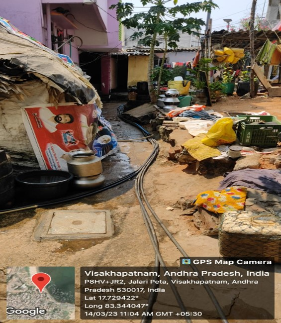

Gnanapuram

Major Problems
- Substanded Housing
- Absence of waste collection system
- Inadequate healthcare: Medical facilities in Jalaripeta are often limited and of poor quality, which can limit access to healthcare for residents.
- Limited educational opportunities: Many children in Jalaripeta do not attend school due to the lack of resources and access to quality education, which can perpetuate the cycle of poverty